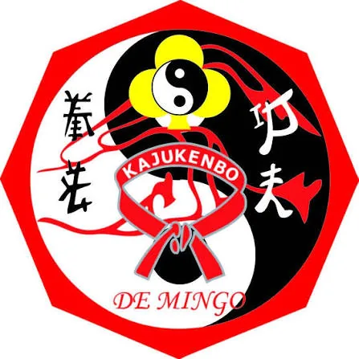
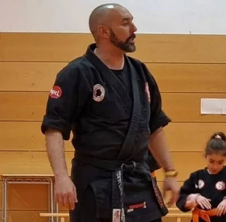
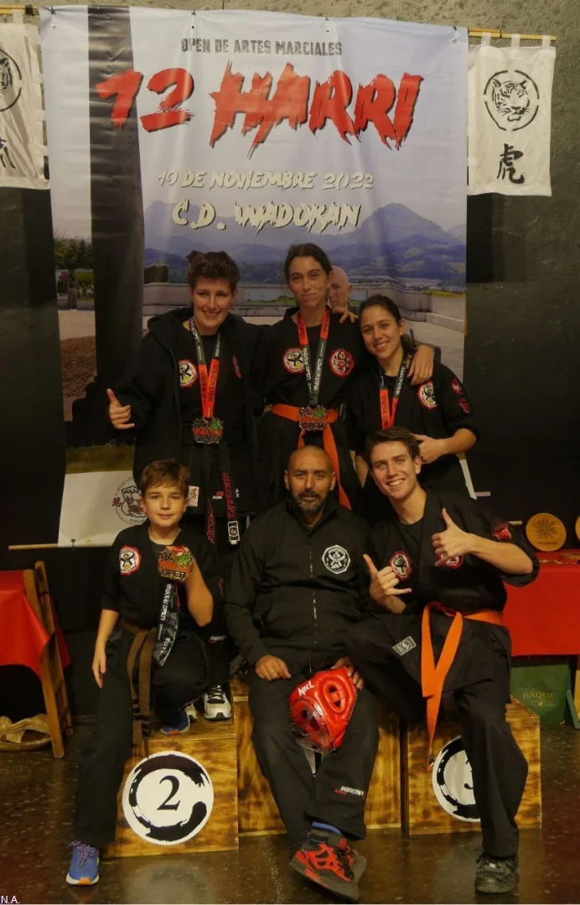

KA Karate
Golpes, desplazamiento y trabajo de pie.

Puño · 拳ESCUELA DE ARTES MARCIALES · ALOVERA
Dos tradiciones de golpeo integradas en el sistema Kajukenbo.
Explora el nombre · ratón · teclado · toque
Ver clases
CUATRO RAÍCES · UN SISTEMA
Kajukenbo reúne tradiciones de defensa y combate. Sus sílabas nombran las disciplinas que confluyeron en Hawái a mediados del siglo XX.
Golpes, desplazamiento y trabajo de pie.
Agarres, proyecciones y control a corta distancia.
Técnicas encadenadas y respuestas rápidas.
Boxeo chino y occidental en la tradición del sistema.
El desglose de BO presenta variantes entre escuelas. Aquí seguimos la explicación de la International Kajukenbo Association; consulta las fuentes.
DE HAWÁI A ALOVERA
Los primeros pasos están documentados. El recorrido preciso hasta esta escuela espera el relato de sus protagonistas.
Cinco practicantes desarrollan Kajukenbo combinando karate, judo o jujitsu, kenpo y boxeo. Las fuentes coinciden en este periodo y en sus raíces, aunque narran algunos detalles de forma diferente.
[[PENDIENTE: FECHA Y RELATO DE LA LLEGADA A ALOVERA]]
[[PENDIENTE: CRONOLOGÍA Y RELACIÓN EXACTA ENTRE VILLASEÑOR Y DE MINGO]]
José Antonio de Mingo y miembros del club local participaron en un taller de defensa personal en Alovera en mayo de 2026. Este hecho confirma actividad local, sin establecer una fecha de fundación de la escuela.
Clases los martes y jueves en dos franjas horarias. La escuela continúa en Alovera; los detalles de su trayectoria se completarán con información confirmada.
Conoce los horariosKAJUKENBO DE MINGO
Estas imágenes pertenecen a la escuela y muestran a su instructor y a parte del grupo. El entrenamiento y la convivencia forman parte de su presente en Alovera.

ALOVERA · GUADALAJARA
Consulta los horarios y la cuota facilitados por la escuela. La dirección y el canal de contacto se publicarán cuando estén confirmados.
[[PENDIENTE: GRUPOS, EDADES Y APLICACIÓN DE LA CUOTA]]
[[PENDIENTE: DIRECCIÓN EXACTA DE LAS CLASES]]
[[PENDIENTE: CONTACTO PÚBLICO CONFIRMADO]]